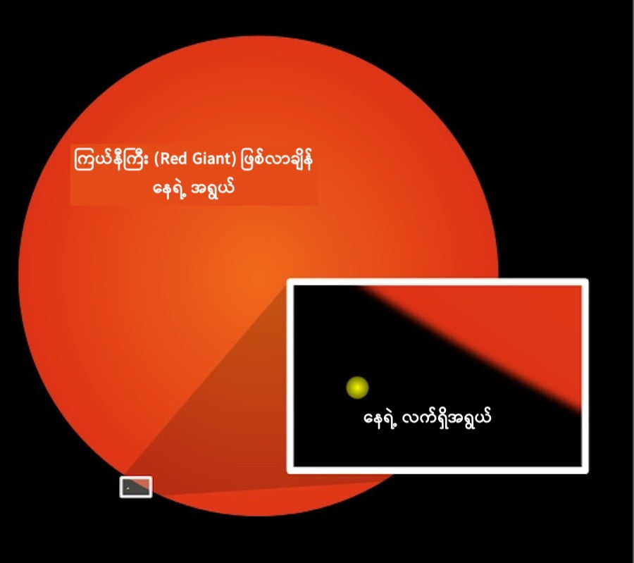

ဒါပေမယ့် ဒီ လောကမှာ ဘယ် အရာမှ မတည်မြဲ ပါဘူး။ ကြယ်တစင်းသာ ဖြစ်တဲ့ ကျွန်တော်တို့ရဲ့ နေ ဟာလဲ တစ်နေ့ တချိန်မ မှာတော့ သူ့ရဲ့ သက်တမ်း ကုန်ဆုံး ရမှာ ဖြစ်ပါတယ်။ တနည်းအားဖြင့် သူ့ရဲ့ ဘဝ နေဝင်ချိန် ကာလ ရောက် လာမှာပါ။
စကြာဝဠာ ထဲက ကြယ်တွေရဲ့ သက်တမ်း ကုန်ဆုံး သွားတဲ့ ဖြစ်စဉ်တွေကို နှစ်ပေါင်း များစွာ လေ့လာ နေခဲ့တဲ့ သိပ္ပံ ပညာရှင်တွေ ကတော့ ကျွန်တော်တို့ နေရဲ့ သက်တမ်းဟာ ဘယ်လောက် အထိ ရှိမယ်၊ ဘယ် အချိန်မှာ သက်တမ်း ကုန်သွားမလဲ၊ သက်တမ်း ကုန်သွားရင် ဘာဖြစ် လာမလဲ၊ ကြယ်သေပြီးတဲ့နောက် ဘာဆက်ဖြစ်မလဲ အစရှိတာတွေကို ကြိုတင်ပြီး အတိအကျ ခန့်မှန်းတွက်ချက် နိင်ကြပါတယ်။
နက္ခတ်ပညာရှင်တွေရဲ့ ခန့်မှန်းချက်အရ နေရဲ့ သက်တမ်းဟာ နောက်ထပ် နှစ်သန်း ၇,၀၀၀ ကနေ ၈,၀၀၀ ကြားလောက် ကျန်သေးတယ်လို့ ဆိုပါတယ်။ ဒါပေမယ့် နေရဲ့ အိုမင်းရင့်ရော် လာတဲ့ ဖြစ်စဉ်ကတော့ ဒီ့မတိုင်မီ ကတဲက စပြီး ဖြစ်လာမယ်လို့ ဆိုပါတယ်။
နေထဲမှာ ဘာတွေ ဖြစ်နေလဲ
နေရဲ့ သက်တမ်းကုန်သွားရင် ဘာဖြစ်လာမလဲ ဆိုတာကို သိဖို့ ပထမဆုံး နေရဲ့ အတွင်းမှာ ဘာတွေ ဖြစ်နေလဲ ဆိုတာ ကြည့်လိုက်ရအောင်ပါ။နေရဲ့ အတွင်းမှာ အဓိက ဖွဲ့စည်းထားတဲ့ ဒြပ်စင်တွေကတော့ ဟိုက်ဒရိုဂျင် နဲ့ ဟီလီယံ ဒြပ်စင်တွေပဲ ဖြစ်ပါတယ်။ အခြား ဒြပ်စင်တွေ ပါဝင်ပေမယ့် ပမာဏအားဖြင့် သိပ်မများပါဘူး။
ဒီ ဓါတ်ငွေ့တွေရဲ့ ပမာဏဟာ ကြီးမားလွန်းတဲ့အတွက် ဓါတ်ငွေ့ မော်လီကျူးတွေ အချင်းချင်း ဆွဲငင်အားကလဲအရမ်း ကြီးပါတယ်။ ဒီတော့ ဒီဓါတ်ငွေ့တွေဟာ နေရဲ့ အလယ်ဗဟိုကို အချင်းချင်း ဆွဲငင်အားကြောင့် ဖိသိပ်ပြီး ပြိုကျလာပါတယ်။
နေရဲ့ အလယ်ဗဟို အူတိုင် (Core) မှာ ဟိုက်ဒရိုဂျင် ဓါတ်ငွေ့တွေဟာ အပြင်က ဖိအားကြောင့် အရမ်း ဖိအားပြင်းထန်လာပြီး ပူလာပါတယ်။ ဒီ ဖိအားနဲ့ ပြင်းထန်တဲ့ အပူချိန် နှစ်ခု ပေါင်းလိုက်တဲ့အခါမှာ နေရဲ့ အူတိုင်ထဲမှာ အဏုမြူ ဓါတ်ပေါင်းစပ်မှု ဖြစ်လာပါတယ်။ ဒါကို nuclear fusion လို့ ခေါ်ပါတယ်။ ဒီဖြစ်စဉ်မှာ ဟိုက်ဒရိုဂျင် အက်တမ် ၄ လုံးပေါင်းပြီး ဟီလီယံ အက်တမ် တစ်လုံး ဖြစ်လာပါတယ်။ ဒီပေါင်းစပ်တဲ့ ဖြစ်စဉ်မှာ ဒြပ်ဆုံးရှုံးမှု ဖြစ်တာကြောင့် အဲ့သည် ဆုံးရှုံးသွားတဲ့ ဒြပ်ဟာ စွမ်းအင်အဖြစ်ပြောင်းသွားပြီး အပြင်ကို ထွက်လာပါတယ်။ ဟိုက်ဒရိုဂျင် အက်တမ်တွေ အမြောက်အများ ပေါင်းစပ်မှုကနေ ထွက်လာတဲ့ စွမ်းအင်ပမာဏဟာ အလွန်များတာမို့ နေဟာ အလွန်ပူပြင်းလာတာ ဖြစ်ပါတယ်။
ဟိုက်ဒရိုဂျင် ကုန်သွားရင် ဘာဖြစ်လာမလဲ
ဒီလို ဟိုက်ဒရိုဂျင် ဒြပ်စင်ပေါင်းစပ်မှု ဖြစ်ရင်းကနေ တဖြည်းဖြည်း အူတိုင်မှာ ရှိတဲ့ ဟိုက်ဒရိုဂျင် ဓါတ်ငွေ့တွေ ကုန်သွားပါတယ်။ ဒီလို အူတိုင်က ဟိုက်ဒရိုဂျင် ကုန်သွားတာဟာ နောက်လာမယ့် နှစ် သန်း ၅,၀၀၀ လောက်ကြာရင် ဖြစ်လာမယ်လို့ ပညာရှင်တွေက ခန့်မှန်းပါတယ်။ဒီလို အူတိုင်က ဟိုက်ဒရိုဂျင်တွေ ကုန်သွားခဲ့ရင်နေရဲ့ အူတိုင်က လောင်ကျွမ်းအား နည်းသွားတာမို့ အကာကနေ ပြိုကျလာတဲ့ ဟိုက်ဒရိုဂျင်တွေကို ပြန်ပြီး တွန်းထားနိုင်တဲ့ အား နည်းသွားပါမယ်။ ဒီအခါ အကာက ဟိုက်ဒရိုဂျင်တွေ အူတိုင်ကို ပြိုဆင်းလာပြီး လိုအပ်နေတဲ့ လောင်ဆာကို ရလို့ ဆက်လက် အသက်ဆက်နိုင်ပါမယ်။
ဒါပေမယ့် ပြဿနာက ဒီမှာ စတာပါ။ အကာက ပြိုဆင်းလာတဲ့ ဟိုက်ဒရိုဂျင်တွေဟာ အူတိုင်ရဲ့ ပတ်လည်မှာ လောင်ကျွမ်းပါတယ်။ အူတိုင်ထဲမှာ ကျန်နေတာက ပိုလေးတဲ့ ဟီလီယမ်တွေပဲ ဖြစ်ပါတယ်။ ဒီအခါ အူတိုင်ဟာ ဒီ ဟီလီယံတွေရဲ့ ဆွဲအားနဲ့ ကြုံ့ဝင်သွားပါမယ်။ အူတိုင်ရဲ့ အပြင်ဖက်က အကာက ဓါတ်ငွေ့တွေကတော့ အပြင်ကို ကားပြီး ထွက်လာပါတယ်။ ဒီလို အကာက ကြီးလာတဲ့ အတွက် နေဟာ တဖြည်းဖြည်း ကြီးလာပြီး အနီးဆုံး ဂြိုဟ်တွေ ဖြစ်တဲ့ မာကျူရီခေါ ဗုဒ္ဓဟူးဂြိုလ်၊ ဗီးနပ်စ် ခေါ် သောကြာဂြိုဟ်နဲ့ ကမ္ဘာဂြိုဟ် တို့ကို ဝါးမျိုသွားပါမယ်။
နေရဲ့ အရောင်ကလဲ အခုလို အဖြူရောင် မဟုတ်တော့ပဲ အနီရောင် ဖြစ်လာပါမယ်။ ဒီအဆင့်ကို “အနီရောင် ဧရာမ ဂြိုဟ် (Red Giant)” လို့ ခေါ်ပါတယ်။ ဒီအဆင့်မှာ နေရဲ့ အရွယ်အစားဟာ မူလ အရွယ်ရဲ့ အဆ တစ်ရာလောက် ရှိမယ်လို့ ခန့်မှန်းပါတယ်။

ဟီလီယံ ကုန်သွားရင်ရော ဘာဆက်ဖြစ်မလဲ
ဒီလို ဟီလီယမ် လောင်ကျွမ်းမှုဟာ ဟိုက်ဒရိုဂျင် လောင်ကျွမ်းမှုလောက် စွမ်းအား မထုတ်ပေးနိုင်ပါဘူး။ ဒီလို လောင်ကျွမ်းမှု စဖြစ်စ အချိန်မှာ မိနစ်ပိုင်း အတွင်း နေရဲ့ စုစုပေါင်း ဟီလီယံ ရဲ့ ၁၀ ပုံ ၁ ပုံလောက်ကို လောင်ကျွမ်း ပစ်လိုက်ပါတယ်။ ဒါကို “ဟီလီယံ တောက်ပခြင်း (Helium Flash)” လို့ ခေါ်ပါတယ်။ ဒီဖြစ်စဉ်မှာ နေရဲ့ အရွယ်အစားကလဲ နဲနဲ ပြန်ပြီး သေးငယ်သွားပါတယ်။ဒီအဆင့်က နေရဲ့ နောက်ဆုံး အသက်ငင်နေတဲ့ အဆင့်ဖြစ်ပါတယ်။ ကျန်ရှိတဲ့ ဟီလီယံတွေ လောင်ကျွမ်းမှုနဲ့ အသက်ဆက်နေရပေမယ့် ဒီ ဟီလီယမ် လက်ကျန်က နေကို ဆက်လက် လောင်ကျွမ်းနေနိုင်ဖို့ နှစ် သန်း ၁၀၀ စာ လောက်ပဲ ရှိပါတယ်။
ဟီလီယံတွေ ကုန်သွားတဲ့အခါမှတော့ ဆက်လက်ပြီး လောင်ကျွမ်းနိုင်စွမ်း မရှိတော့ပါဘူး။ ဒီလို လောင်ကျွမ်းမှု မရှိတော့တဲ့အခါ အပြင်ကို ကန်ထားတဲ့ တွန်းအား ပျောက်ဆုံးသွားပါတယ်။ ဒီအခါ အတွင်းက အူတိုင်က ဗဟိုကို ကျုံ့ဝင်သွားပါတယ်။ ဒီ ကျုံ့ဝင်သွားတဲ့ အူတိုင်ဟာ White Dwarf လို့ခေါ်တဲ့ ကြယ်ဖြူပု လေး ဖြစ်လာပါမယ်။ ဒီကြယ်ဖြူပုလေးဟာ လောင်ကျွမ်းမှု မရှိတော့ပေမယ့် အရင်က လက်ကျန် အပူချိန်ကြောင့် နောက် နှစ်သန်းပေါင်း များစွာကြာအောင် ဆက်လက်ပြီး ပူပြင်းနေအုံးမှာ ဖြစ်ပါတယ်။
ဒီအချိန်မှာ အသက်ငင်နေပြီ ဖြစ်တဲ့ နေဟာ လက်ကျန် ဟိုက်ဒရိုဂျင် (ဒါမှမဟုတ်) ဟီလီယံ ကျန်လိုကျန်ငြား အကာထဲက ဓါတ်ငွေ့တွေထဲမှာ လိုက်ရှာပါတော့တယ်။ ဒီဖြစ်စဉ်ရဲ့ ရလဒ်ကတော့ အကာက လက်ကျန် ဓါတ်ငွေ့တွေကို မိုင်သန်းပေါင်း များစွာထိ ရောက်အောင် တွန်းထုတ်ပစ်လိုက်တာပဲ ဖြစ်ပါတယ်။
အချို့ ထင်နေသလို ကျွန်တော်တို့ နေဟာ ဆူပါနိုဗာပေါက်ကွဲမှုကြီး ဖြစ်ပြီး ဇါတ်သိမ်းသွားမယ်ဆိုတာ မဟုတ်ပါဘူး။ နေရဲ့ အရွယ်ဟာ သေးလွန်းတဲ့ အတွက် ဆူပါနိုဗာ ပေါက်ကွဲမှု ဖြစ်လောက်အောင် အားကောင်းတဲ့ စွမ်းအင် မရရှိနိုင်ပါဘူး။ အပေါ်က ပြောခဲ့တဲ့ ဓါတ်ငွေ့တွေ ပြန့်ကျဲထွက်သွားတဲ့ ဖြစ်စဉ်ဟာ ဆူပါနိုဗာ ပေါက်ကွဲမှုကြီးလို အချိန် တခန လေး အတွင်း ပေါက်ကွဲထွက်သွားတာ မဟုတ်ပဲ နှစ် ၁၀,၀၀၀ လောက် ကြာတဲ့ အချိန်ကာလ အတွင်းမှာ ဖြစ်ပေါ်လာမယ်လို့ ခန့်မှန်းကြပါတယ်။
ဒါဆို Black Hole ရော ဖြစ်လာနိုင်ပါသလား။ တွင်းနက် ဖြစ်လာဖို့လဲ နေမှာ လုံလောက်တဲ့ ဒြပ်ပမာဏ မရှိပါဘူး။ ဒါ့ကြောင့် ကျွန်တော်တို့ နေဟာ Black Hole တစ်ခုအဖြစ်လဲ ပြောင်းသွားနိုင်စွမ်း ရှိမှာ မဟုတ်ပါဘူး။
ကျန်ခဲ့တဲ့ ဓါတ်ငွေ့တွေဟာ နက်ဗြူလာ ဓါတ်ငွေ့တိမ်တိုက် (Nebula) အဖြစ် ပြောင်းလဲ သွားမှာ ဖြစ်ပါတယ်။ ဒီ နက်ဗြူလာကြီးရဲ့ အကျယ်အဝန်းဟာ ဂြိုလ်သိမ်တွေ ပတ်နေတဲ့ ဂြိုလ်သိမ်ခါးပတ် အထိ ရောက်မယ်လို့ ခန့်မှန်းပါတယ်။
ဒီ နက်ဗြူလာ ကြီးရဲ့ အလယ်က ကျန်ခဲ့တဲ့ နေရဲ့ အကြွင်းအကျန် White Dwarf ကြယ်ဖြူပုလေးကတော့ နောက်နှစ် ထရီလီယံ နဲ့ချီကြာအောင် လက်ကျန် အပူချိန်နဲ့ အလင်းရောင်ကို ဆက်လက်ထုတ်ပေးနေရင်း စကြာဝဠာ ကုန်ဆုံးသွားမယ့်ရက်ကို အထီးကျန်စွာ စောင့်မျှော်နေမှာ ဖြစ်ပါတယ်။
Reference:
What happens when the sun burns out? | Popular Science
What will happen when the sun dies? | Space
Why the Sun Won’t Become a Black Hole | NASA